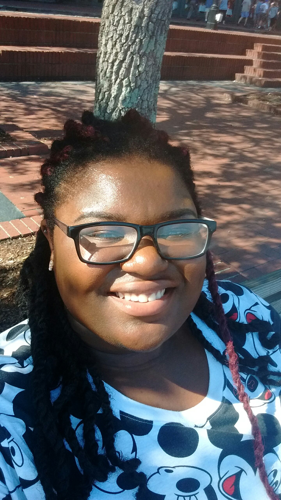

 I am a 3rd year student at Meredith College in Raleigh NC, graduating in May 2019. Over the past summer I conducted research in cyber-security and neural networks, which you can read about here. I will also be completing an internship this summer 2018 with UnitedHealth Group's technology offices, Optum. I'm a Computer Science major and a double minor in Mathematics and Graphic Design , evidence of my both analytically-driven and creative background. I have constantly juggled between these two sides of my personality, after starting college I realized that, instead of isolating these two integral parts of my being, I should find ways to cater to both and combine my interests.